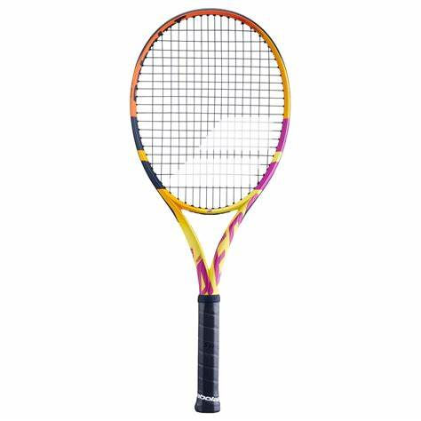

Babolat Pure Aero

Do you want to dominate the game with ultimate spin? The 7th generation BABOLAT Pure Aero tennis racquet evolves with a unique approach engineered around the spin in your game. Join players like Rafael Nadal, Leylah Fernandez, Félix Auger-Aliassime, and Carlos Alcaraz and discover which Pure Aero racquet lets you own your spin. Have powerful strokes and want to dictate the points with controllable spin? You will love the BABOLAT Pure Aero. Team BABOLAT pro players may play with a customized or different model than the equipment depicted.